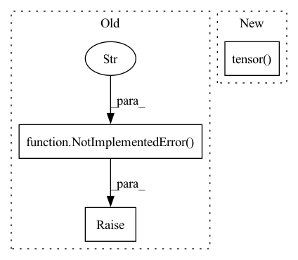

Pattern ID :21735
Before Change
return X.Act(p.view([1] * (X.dim() - 1) + [3,]))
def quaternion(self, lietensor):
raise NotImplementedError("quaternion not implemented yet" )
@classmethod
def identity(cls, *args, **kwargs):
raise NotImplementedError("Instance has no identity.")After Change
To quaternion
X = lietensor.Exp() if self.on_manifold else lietensor
if self.lid == 1 or self.lid == 2: // X is SO3 or RxSO3 type
return LieTensor(X.tensor() .view(-1, X.size()[-1])[:, 0:4].view(X.size()[:-1] + (-1,)), ltype=SO3_type)
elif self.lid == 3 or self.lid == 4: // X is SE3 or Sim3 type
return LieTensor(X.tensor().view(-1, X.size()[-1])[:, 3:7].view(X.size()[:-1] + (-1,)), ltype=SO3_type)
In pattern: SUPERPATTERN
Frequency: 4
Non-data size: 3
Instances Fragment ID: 69391426
Project Name: pypose/pypose
Commit Name: 221c2e208acad211a1a5e6d62c8d0a8f4dc38505
Time: 2022-05-31
Author: futaimeng@gmail.com
File Name: pypose/lietensor/lietensor.py
M Class Name: LieType
N Class Name: LieType
M Method Name: quaternion(2)
N Method Name: quaternion(2)
M Parent Class:
N Parent Class:
M File Name: pypose/lietensor/lietensor.py
N File Name: pypose/lietensor/lietensor.py
M Start Line: 132
M End Line: 132
N Start Line: 133
N End Line: 140
Before Change
upsampled_image = F.interpolate(downsampled_image, size=(height, width), mode="nearest")
result = upsampled_image * mask + x * (1. - mask)
else:
raise NotImplementedError("Not implemented mask type." )
return result, maskAfter Change
mask = torch.ones(size=[x.shape[0], 1, x.shape[2], x.shape[3]])
for i in range(max_mask):
mask_temp = random_mask(height=height, width=width)
mask_temp = torch.tensor( mask_temp, dtype=torch.float32)
if x.is_cuda:
mask_temp.cuda()
result[i, :, :, :] = x[i, :, :, :] * (1. - mask_temp)
mask[i, :, :, :] = mask[i, :, :, :] * mask_temp Fragment ID: 69391425
Project Name: sayednadim/global-and-local-attention-based-free-form-image-inpainting
Commit Name: 76ff7604018fa398ac445982097becbe3fc20e3a
Time: 2020-08-16
Author: smnadimuddin@gmail.com
File Name: model/mask.py
M Class Name: AnonimousClass
N Class Name: AnonimousClass
M Method Name: mask_image(2)
N Method Name: mask_image(2)
M Parent Class:
N Parent Class:
M File Name: model/mask.py
N File Name: model/mask.py
M Start Line: 56
M End Line: 72
N Start Line: 49
N End Line: 59
Before Change
// phi = get_dihedral_torch(*backbone[s, i*3 - 1 : i*3 + 3]) if i>0 else None
psi = get_dihedral_torch(*backbone[s, i*3 + 0 : i*3 + 4] )if i < length-1 else None
// yet to be done
raise NotImplementedError("Still not implemented" )
return new_coords
After Change
new_coords[:, i, 1],
new_coords[:, i, 2],
BB_BUILD_INFO["BONDLENS"]["c-o"],
torch.tensor( BB_BUILD_INFO["BONDANGS"]["ca-c-o"]) ,
dihedral)
return new_coords
Fragment ID: 69391428
Project Name: lucidrains/alphafold2
Commit Name: 2635a4391ec50f77f86cc34f17c3a6395ba6bb53
Time: 2021-02-06
Author: ericalcaide1@gmail.com
File Name: alphafold2_pytorch/utils.py
M Class Name: AnonimousClass
N Class Name: AnonimousClass
M Method Name: sidechain_container(5)
N Method Name: sidechain_container(5)
M Parent Class:
N Parent Class:
M File Name: alphafold2_pytorch/utils.py
N File Name: alphafold2_pytorch/utils.py
M Start Line: 212
M End Line: 212
N Start Line: 231
N End Line: 248
Before Change
return a.numpy()
def i(self, dtype: Any = None) -> Tensor:
raise NotImplementedError(
"pytorch backend doesn"t support imaginary numbers at all!"
)
def real(self, a: Tensor) -> Tensor:
return a
// hmm, in torch, everyone is real.After Change
dtype = getattr(torchlib, dtypestr) // type: ignore
if isinstance(dtype, str):
dtype = getattr(torchlib, dtype)
return torchlib.tensor( 1j, dtype=dtype)
def real(self, a: Tensor) -> Tensor:
return a
// hmm, in torch, everyone is real. Fragment ID: 69391429
Project Name: tencent-quantum-lab/tensorcircuit
Commit Name: f2106f4b09d4bb262fb96fc0c104771b1b07f6dc
Time: 2021-12-22
Author: kcanamgal@foxmail.com
File Name: tensorcircuit/backends/pytorch_backend.py
M Class Name: PyTorchBackend
N Class Name: PyTorchBackend
M Method Name: i(2)
N Method Name: i(2)
M Parent Class: pytorch_backend.PyTorchBackend
N Parent Class: pytorch_backend.PyTorchBackend
M File Name: tensorcircuit/backends/pytorch_backend.py
N File Name: tensorcircuit/backends/pytorch_backend.py
M Start Line: 110
M End Line: 112
N Start Line: 118
N End Line: 122